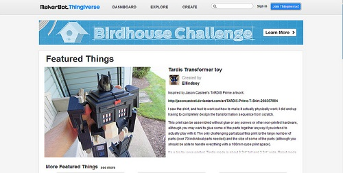
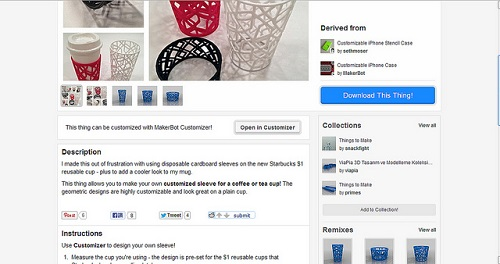

也紀念我們永遠的朋友 李士傑先生（Shih-Chieh Ilya Li）。
Thingiverse — 開放數位設計、發揮 3D 列印機的無限潛力
◎ 本文原載台灣創用CC 計畫，原文章連結按此。
科技產品越來越多樣化，也越來越普遍，3D 列印機 (3D printer)、自動裁紙機 (Automatic papar cutter)、雷射切割機 (laser cutter)、電腦數位機床 (CNC machine)等都更容易被取得，也就越來越多人開始使用這些設備來自行創造有用而新奇的小物品。
不過，當人們了解 3D 列印機的功能後，最常問的問題就是「為什麼你需要一個這樣的機器？」就算機器再好用、再普及，也需要先有數位設計才能讓這些機器發揮作用，因此就有了 Thingiverse 這個解決之道。

Thingiverse 是一個分享平台，匯集各地可以實踐成真實產品的數位設計藍圖。創作者在此提供 3D 列印機讀取的 3D 檔案、供雷射切割機使用的向量檔案、說明製作流程的 PDF 檔案等，其他人要是有興趣，就可以一次打包所有相關檔案，複製或是改造出屬於自己的實體成品。
Thingiverse 附屬於開放資源 3D 列印機 MakerBot 公司，這個公司由 Adam Mayer、Smith aka Hoeken 和 Joris Peels 成立，比起另一個知名的開放資源 3D 列印機 RepRap，他們設計的 MakerBot 能更快速的組裝，但同樣都是開放資源，讓使用者可以協助改進 3D 列印機的效能。
雖然，Joris Peels 預估這樣的東西大概再十年後才會變的普遍，但是他們現在的消費者其實不只有科技玩家、工程師、設計師，也有一些想要自己動手做一些東西、快速解 決生活小問題的一般人，令人驚喜的是，有不少學生藉此發揮創意，年紀輕輕就能做出許多意想不到的成品。
Thingiverse 時常會舉辦競賽，參賽者要根據挑戰主題及規則將設計的作品放在網站上，鼓勵他人使用自己的設計，最後的贏家會有獎品，並在部落格上專門介紹，以促使更多人一起來發揮 3D 列印機的潛力。
在這個平台上，創作者要根據創用CC 或 GNU 來授權，但是不同的人可以選擇不同的授權方式，因此在使用不同人的設計時，都要特別留意，有些可能連名字都不需要標注，有些則需要同時遵守創用CC 的四個條件。
為了方便使用者記憶以及增加標示出創作者的意願，最近，Thingiverse 將創作者 whosawhatsis 設計的 Thingitag 發揚光 大，Thingitag 上有授權方式、作品作者名稱、發布日期和連結網址 QR 碼，在 Thingiverse 的網頁上可以很方便而迅速的點擊列印。

Thingiverse 除了在授權標誌上讓創作者很自由、讓使用者很放心之外，值得一提的是，它清楚展現了每個設計的來龍去脈。創作者可以說明自己設計的 點子來自於平台上的哪些設計，使用者則可以表態他喜不喜歡、想不想收藏，以及他做出來的成品或是改造之後的會是什麼樣子。

這個網站背後的夢想是，希望到了人人都有一台 3D 列印機的那一天，他們會來到這個平台，找到對他們而言很有用、很有趣、很酷的東西，下載、列印，只要花個幾分鐘，就能快速拿到實體物品。
ps. 台灣的 makerbot 介紹網站：https://sites.google.com/site/makerbottw/product-1
延伸閱讀：https://opendesignnow.org/index.php/case/thingiverse-zach-smith/
Special


Address：No.128, Sec.2, Academia Rd., Institute of Information Science, Academia Sinica, Nangang District, Taipei City 11529, Taiwan (R.O.C).
Privacy Policy. Terms-of-use